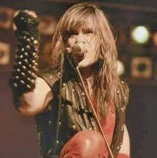
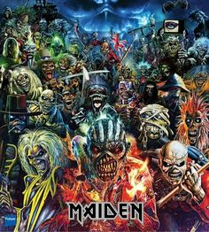
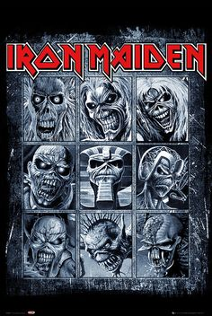
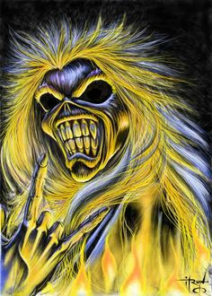
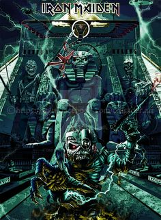
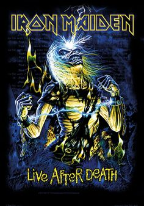
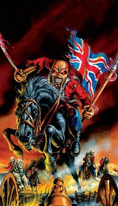

Integrantes
Vocalista
Bruce Dickinson

Guitarrita
Steve Harris

Guitarrita
Dave Murray

Guitarrita
Janick Gers

Baterista
Nick McBrain

Bruce Dickinson

Steve Harris
Dave Murray
Janick Gers
Nick McBrain






Hallowed Be Thy Name
The Tropper
Fear of the dark
Run to the hills
Number of the best
Aces High
Rime of the Ancient Mariner
2 Minutes To Midnight